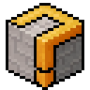
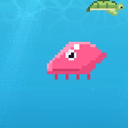
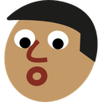
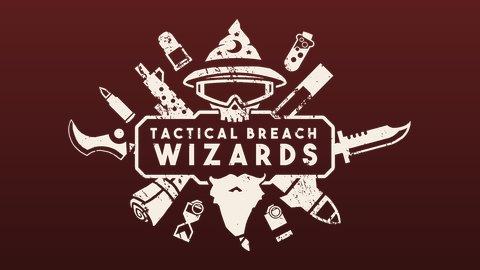
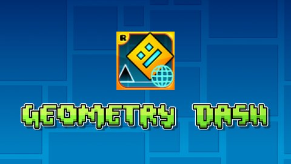

Searching with Yahoo



Pick a game and jump in.


Clearing the file cache keeps cookies, saved games, bookmarks, and history.
This is an experimental browser proxy. Individual game connections and third-party sign-in can still fail. Actual iPad testing remains separate.
Choose a Wisp relay or your Harbor server. Games work without this connection.
No connection configured.
Remove backup
Harbor source